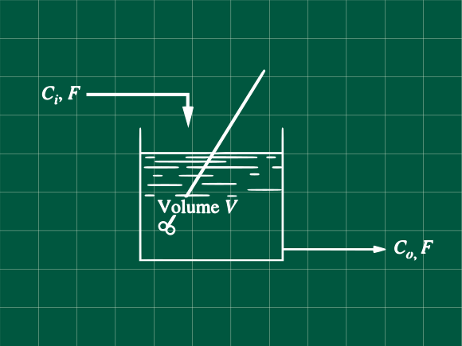
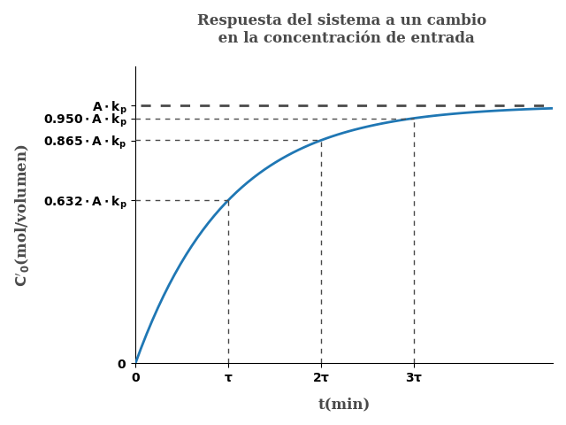

Problema 5.5 (Process Systems Analysis and Control - Coughanowr, LeBlanc)

Considere el tanque agitado mostrado en la figura. La reacción que ocurrre es:
A→B
Con una velocidad de reacción igual a:
r=kC0
Donde
r = (mol A)/(volumen)/(tiempo)k = constante de velocidad de reaccioˊnC0(t) = concentracioˊn de A en el reactor en el tiempo t (mol A)/(volumen)V = volumen de la mezcla en el reactorF = caudal de alimentacioˊn constante (volumen)/(tiempo)Ci(t)concentracioˊn de A en la entrada (mol A)/(volumen)
Asumiendo densidad y volumen constante V, derive la función de tranferencia, relacionando la concentración en el reactor y la concentración de entrada. Dibuje la respuesta del reactor para un cambio tipo paso unitario en la concentración de entrada.
Resolviendo
Escribiendo nuestro balance de materia, sabiendo que no=C0V
CiF−C0F−kC0V=dtdno=dtd(C0V)
CiF−C0F−kC0V=Vdtd(C0) (1)
Realizando el balance en estado estacionario
CisF−C0sF−kC0sV=0 (2)
Restado (2) de (1) y tranformando a variables desviación
CiF−CisF−(C0F−C0sF)−k(C0V−C0sV)=Vdtd(C0−C0s)
Ci′F−C0′F−kC0′V=Vdtd(C0′)
Aplicando la transformada de Laplace y despejando y sabiendo que C0′(t=0)=0
Ci′(s)F−C0′(s)F−kC0′(s)V=V(sC0′(s)−C0′(t=0))
Ci′(s)F−C0′(s)F−kC0′(s)V=VsC0′(s)
Obteniendo nuestra función transferencia
Ci′(s)C0′(s)=Vs+F+kVF
Para poder hacer la gráfica con la variación de la concentración de entrada, reordenemos nuestra función.
Ci′(s)C0′(s)=Vs/(F+kV)+1F/(F+kV)
Haciendo un cambio de variable
Kp=F/(F+kV)τ=V/(F+kV)
Ci′(s)C0′(s)=τs+1Kp
Para un cambio en la concentración de entrada tipo paso unitario Con A como una constante cualquiera Ci′=A/s.
C0′(s)=sAτs+1Kp
Reordenando para realizar la antitransformada
C0′(s)=s(τs+1)A⋅Kp+A⋅Kp⋅τs−A⋅Kp⋅τs
C0′(s)=sA⋅Kp−τs+1A⋅Kp⋅τ
C0′(s)=sA⋅Kp−s+1/τA⋅Kp
Antitransformando
C0′(t)=A⋅Kp(1−e−t/τ)
Graficando esta respuesta

Referencias
- Coughanowr, D. R.; LeBlanc, S. E. (2009). Process Systems Analysis and Control (3rd edition). McGraw-Hill. ISBN 978-0-07-339789-4.